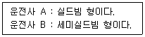
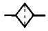
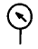
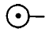

모터그레이더운전기능사 (2002-01-27 기출문제)
1과목: 임의 구분
1. 도시가스가 공급되는 지역에서 굴착공사를 하기전에 도로 부분의 지하에 가스배관의 매설여부는 누구에게 조회하여야 하는가?
- 시장
- 도지사
- 해당 도시가스 사업자
- 경찰서장
(정답률: 알수없음)

2. 가스배관의 위치 표시용으로 설치하는 표시깃발의 색상으로 적합한 것은?
- 깃발글씨 : 적색, 깃발색 : 백색
- 깃발글씨 : 흑색, 깃발색 : 백색
- 깃발글씨 : 적색, 깃발색 : 황색
- 깃발글씨 : 황색, 깃발색 : 적색
(정답률: 알수없음)
3. 전력케이블이 매설돼 있음을 표시하기 위한 표지 시트는 차도에서 지표면 아래 몇 ㎝ 깊이에 설치되어 있는가?
- 30
- 10
- 50
- 100
(정답률: 알수없음)
4. 고무로 피복된 코드를 여러겹 겹친 층에 해당되며, 타이 어에서 타이어 골격을 이루는 부분은?
- 숄더(shoulder)부
- 비드(bead)부
- 카커스(carcass)부
- 트레드(tread)부
(정답률: 알수없음)
5. 토크 변환기에서 오일의 과다한 압력을 방지하는 밸브는 ?
- 압력조정밸브
- 매뉴얼 밸브
- 스로틀밸브
- 첵크밸브
(정답률: 알수없음)
6. 일반적으로 굴삭기가 할 수 없는 작업은?
- 경사면 굴토
- 리핑 작업
- 차량토사 적재
- 땅고르기 작업
(정답률: 알수없음)
7. 굴삭 작업시 작업 능력이 떨어지는 가장 큰 이유는?
- 탱크 용량 부족
- 오일의 냉각
- 채터링 현상
- 릴리프 밸브 조정 불량
(정답률: 알수없음)
8. 핸들이 흔들리는 이유로 적당하지 못한 것은?
- 타이어의 공기압 과다
- 앞바퀴 얼라이먼트의 틀림
- 웜과 섹터의 백래시 과소
- 킹핀의 마멸
(정답률: 알수없음)
9. 지게차에서 자동차와 같이 스프링을 사용하지 않은 이유를 설명한 것 중 옳은 것은?
- 많은 하중을 받기 때문이다.
- 롤링이 생기면 적하물이 떨어지기 때문이다.
- 앞차축이 구동축이기 때문이다.
- 현가장치가 있으면 조향이 어렵기 때문이다.
(정답률: 알수없음)
10. 지게차로 가파른 경사지에서 적재물을 운반할 때에는 어떤 방법이 좋겠는가 ?
- 적재물을 앞으로 하여 천천히 내려온다.
- 기어의 변속을 중립에 놓고 내려온다.
- 지그재그로 회전하여 내려온다.
- 기어의 변속을 저속상태로 놓고 후진으로 내려 온다.
(정답률: 알수없음)
11. 기중기에서 붐을 교환하는 가장 좋은 방법은 ?
- 붐 교환대를 이용한다.
- 트레일러를 이용한다.
- 굴삭기를 이용한다.
- 기중기를 이용한다.
(정답률: 알수없음)
12. 지중 송전선로의 가공 송전선로에 대한 장점이 아닌것은?
- 지역 환경과의 조화를 이룰수 있다.
- 사고복구에 장시간이 소요된다.
- 시설 보안상 유리하다.
- 인축에 대한 안정성이 높다.
(정답률: 알수없음)
13. 연소실에서 윤활유가 연소할 때 가장 가까운 배기가스 색은?
- 자색
- 흑색
- 백색
- 무색
(정답률: 알수없음)
14. 팬벨트의 장력이 너무 강할 경우에 발생되는 현상은?
- 발전기의 스테이터가 손상된다.
- 기관이 과열된다.
- 발전기 베어링이 손상된다.
- 충전부족 현상이 생긴다.
(정답률: 알수없음)
15. 디젤기관이 시동되지 않는 원인과 관계 없는 것은?
- 기관의 압축압력이 높다.
- 연료 계통에 공기가 혼입되어 있다.
- 연료가 부족하다.
- 연료 공급 펌프가 불량이다.
(정답률: 알수없음)
16. 디젤기관을 작동할 때의 주의사항으로 틀린 것은?
- 기관 시동은 각종 조작레버가 중립위치에 있는가를 확인 후 행한다.
- 엔진이 시동되면 적어도 1분 정도는 스타트 스위치에서 손을 떼지 않아야 한다.
- 기온이 낮을 때는 예열 경고등이 소등되면 시동한다.
- 공회전을 필요 이상 하지 않는다.
(정답률: 알수없음)
17. 기관 시동전에 점검할 사항과 관계가 먼 것은?
- 엔진 오일의 압력
- 냉각수량
- 윤활계통의 누설여부
- 엔진 오일량
(정답률: 알수없음)
18. 냉각계통으로 배기가스가 누설되는 원인에 해당되는 것은 ?
- 워터펌프의 불량
- 냉각팬의 벨트 유격 과대
- 실린더 헤드 가스켓 불량
- 매니폴더의 가스켓 불량
(정답률: 알수없음)
19. 디젤엔진은 연소실에 연료를 어떤 상태로 공급하는가?
- 노즐로 연료를 안개와 같이 분사한다.
- 기화기와 같은 기구를 사용하여 연료를 공급한다.
- 액체 상태로 공급한다.
- 가솔린 엔진과 같은 연료 공급펌프로 공급한다.
(정답률: 알수없음)
20. 디젤기관을 예방정비 하는데 고압파이프 연결부에서 연료가 샐 때 어떤 공구를 사용하는 것이 가장 좋은가?
- 복스렌치
- 옵셋렌치
- 오픈렌치
- 조정렌치
(정답률: 알수없음)
2과목: 임의 구분
21. 디젤기관에서 압축압력이 저하되는 가장 큰 원인은?
- 피스톤링의 마모
- 기어오일의 열화
- 엔진오일 과다
- 냉각수 부족
(정답률: 알수없음)
22. 터보차저는 무엇에 의해서 구동되는가?
- 엔진의 배기가스에 의해서 구동된다.
- 엔진의 흡입가스에 의해서 구동된다.
- 엔진의 열에 의해서 구동된다.
- 엔진의 동력으로 구동된다.
(정답률: 알수없음)
23. 윤활유의 점도가 기준보다 높은 것을 사용했을 때 일어나는 현상은?
- 동절기에 사용하면 기관 시동이 용이하다.
- 점차 묽어짐으로 경제적이다.
- 윤활유가 좁은 공간에 잘 스며들어 충분한 주유가 된다.
- 윤활유 공급이 원활하지 못하다.
(정답률: 알수없음)
24. 시동전동기의 회전이 안될 경우 점검할 사항이 아닌 것은 ?
- 배터리 단자의 접촉 여부
- 축전지의 방전 여부
- 배선의 단선 여부
- 팬벨트의 이완 여부
(정답률: 알수없음)
25. 부동액이 구비하여야 할 조건이 아닌 것은?
- 침전물의 발생이 없을 것
- 물과 쉽게 혼합될 것
- 부식성이 없을 것
- 비등점이 물보다 낮을 것
(정답률: 알수없음)
26. 축전지 케이스와 커버 세척에 가장 알맞은 것은?
- 솔벤트와 물
- 가솔린과 물
- 소다와 물
- 소금과 물
(정답률: 알수없음)
27. AC 발전기에서 전류가 발생되는 것은?
- 로터 코일
- 스테이터 코일
- 전기자 코일
- 레귤레이터
(정답률: 알수없음)
28. 건설기계 기관에서 축전지를 사용하는 주된 목적은?
- 오일펌프의 작동
- 기동전동기의 작동
- 워터펌프의 작동
- 연료펌프의 작동
(정답률: 알수없음)
29. 작업 중 운전자가 확인해야 할 것이 아닌 것은?
- 온도계
- 유압계
- 전류계
- 실린더 압력
(정답률: 알수없음)
30. 현재 널리 사용되는 할로겐 램프에 대하여 운전사 두사람(A,B)이 서로 주장하고 있다. 다음 중 어느 운전사의 말이 옳은가?

- A, B가 모두 맞다.
- A가 맞다.
- A, B 둘 다 틀리다.
- B가 맞다.
(정답률: 알수없음)
31. 유압계통에서 오일의 누설 점검시 유의 사항이 아닌것은?
- 실(seal)의 파손
- 실(seal)의 마모
- 오일의 윤활성
- 볼트의 이완
(정답률: 알수없음)
32. 유압회로에서 유압유의 점도가 너무 클 때 발생되는 현상이 아닌 것은?
- 열발생의 원인이 된다.
- 동력 손실이 커진다.
- 관내의 마찰 손실이 커진다.
- 유압이 낮아진다.
(정답률: 알수없음)
33. 펌프가 오일을 토출하지 않을 때의 원인으로 틀린 것은?
- 오일 탱크의 유면이 낮다.
- 오일의 점도가 너무 높다.
- 흡입관으로 공기가 유입된다.
- 토출측 배관 체결 볼트가 이완되었다.
(정답률: 알수없음)
34. 유압기기에서 회전펌프가 아닌 것은?
- 제트펌프
- 기어펌프
- 베인펌프
- 나사펌프
(정답률: 알수없음)
35. 기어식 유압펌프에서 소음이 나는 원인이 아닌 것은?
- 오일의 과부족
- 펌프의 베어링 마모
- 흡입 라인의 막힘
- 오일량의 과다
(정답률: 알수없음)
36. 유압장치의 장점이 아닌 것은?
- 작은 동력원으로 큰 힘을 낼 수 있다.
- 과부하 방지가 용이하다.
- 운동방향을 쉽게 변경할 수 있다.
- 고장원인의 발견이 쉽고 구조가 간단하다.
(정답률: 알수없음)
37. 유압장치에서 고압 소용량, 저압 대용량 펌프를 조합운전 할 때, 작동압이 규정 압력 이상으로 상승시 동력 절감을 하기 위해 사용하는 밸브는?
- 감압밸브
- 릴리프밸브
- 시퀀스밸브
- 무부하밸브
(정답률: 알수없음)
38. 축압기의 기호 표시는?



(정답률: 알수없음)
39. 작동유 탱크에 공기압을 조절하는 밸브는?
- 유압조절 밸브
- 공기압력 조절밸브
- 컨트롤 밸브
- 언로드 밸브
(정답률: 알수없음)
40. 유압장치의 구성요소가 아닌 것은?
- 오일탱크
- 펌프
- 제어밸브
- 차동장치
(정답률: 알수없음)
3과목: 임의 구분
41. 피스톤 펌프의 특징 중 맞지 않은 것은 ?
- 일반적으로 토출압력이 높다.
- 펌프 효율이 높다.
- 구조가 간단하고 값이 싸다.
- 베어링에 부하가 크다.
(정답률: 알수없음)
42. 유압계통의 최대압력을 제어하는 밸브는?
- 첵 밸크
- 쵸크밸브
- 오리피스밸브
- 릴리프밸브
(정답률: 알수없음)
43. 건설기계 등록사항의 변경이 있을 때에는 며칠 이내에 관할 시·도지사에게 신고서를 제출하여야 하는가?
- 7일
- 30일
- 10일
- 15일
(정답률: 알수없음)
44. 검사 유효기간이 만료된 건설기계는 유효기간이 만료된날로부터 몇월이내에 건설기계 소유자에게 최고하여야 하는가?
- 3개월
- 1개월
- 4개월
- 2개월
(정답률: 알수없음)
45. 교차로 통행방법 중 틀린 것은?
- 교차로에서는 다른 차를 앞지르지 못한다.
- 교차로에서는 정차하지 못한다.
- 좌.우회전시에는 방향지시기 등으로 신호를 하여야한다.
- 교차로에서는 반드시 경음기를 울려야 한다.
(정답률: 알수없음)
46. 정차는 할 수 있으나 주차만 금지된 장소는?
- 교차로의 측단으로부터 5미터 이내의 지점
- 도로공사 구역 양단으로부터 5미터 이내의 지점
- 횡단보도내
- 건널목 측단으로부터 10미터 이내의 지점
(정답률: 알수없음)
47. 철길 건널목 통과 방법으로 틀린 것은?
- 건널목에서 앞차가 서행하면서 통과할 때에는 그 차를 따라 서행한다.
- 차단기가 내려지려고 할 때에는 통과하여서는 아니된다.
- 경보기가 울리고 있는 동안에는 통과하여서는 아니된다.
- 건널목 직전에서 일시 정지하였다가 안전함을 확인한 후 통과한다.
(정답률: 알수없음)
48. 눈이 20mm 미만 쌓인 때는 얼마로 감속운행 하여야 하는 가?
- 100분의 20
- 100분의 30
- 100분의 40
- 100분의 50
(정답률: 알수없음)
49. 도주차량 신고로 인한 벌점상계에 대한 특혜점수는?
- 120점
- 30점
- 40점
- 특혜점수 없음
(정답률: 알수없음)
50. 과태료 50만원 이하의 처분에 해당되는 것은?
- 사후관리에 관한 명령을 이행하지 아니한자
- 등록되지 않은 건설기계를 사용하거나 운행한자
- 건설기계조종사의 주소변경 신고를 허위로 한 자
- 승인을 얻지 않고 건설기계의 주요 구조를 변경한자
(정답률: 알수없음)
51. 기계시설의 안전 유의사항에 맞지 않는 것은?
- 회전부분(기어, 벨트, 체인) 등은 위험하므로 반드시 커버를 씌워둔다.
- 발전기, 아크용접기, 엔진 등 소음이 나는 기계는 한곳에 모아서 배치한다.
- 작업장의 통로는 근로자가 안전하게 다닐 수 있도록 정리정돈을 한다.
- 작업장의 바닥이 미끄러워 보행에 지장을 주지 않도록 한다.
(정답률: 알수없음)
52. 추락의 위험이 있는 곳에 가장 적절한 보호구는?
- 안정장갑
- 안전모
- 보안경
- 귀마개
(정답률: 알수없음)
53. 다음에서 화재의 분류 설명으로 맞는 것은?
- A급화재 : 일반 가연물 화재
- B급화재 : 금속화재
- C급화재 : 유류화재
- D급화재 : 전기화재
(정답률: 알수없음)
54. 보호안경을 사용하는 설명으로 맞지 않는 것은?
- 유해 약물로 부터 눈을 보호하기 위하여
- 유해 광선으로 부터 눈을 보호하기 위하여
- 비산되는 칩으로 부터 눈을 보호하기 위하여
- 중량물이 떨어질때 신체를 보호하기 위하여
(정답률: 알수없음)
55. 크레인 신호자는 안전작업수행을 위하여 작업내용, 환경조건을 정확히 파악하여야 하는데 안전 준수사항으로 틀린 것은?
- 걸이신호는 크레인 작업표준 신호에 따른다.
- 신호는 반드시 1명 이상의 신호자를 선임하여 신호한
- 신호는 크레인 운전자가 잘 보이는 위치에서 행한다.
- 걸이자는 걸이 보조자의 작업행동을 주시하여야한다.
(정답률: 알수없음)
56. 이동식 기계로 주행할 경우 운전자의 주의사항으로 운전 방법이 잘못된 것은?
- 급출발, 급제동을 하여서는 안된다.
- 한눈을 팔고 운전을 하여서는 안된다.
- 주행 중 뛰어오르거나 뛰어내려서는 안된다.
- 제한속도를 준수하여야 하며 추월을 한다.
(정답률: 알수없음)
57. 운전자는 작업 전에 장비의 정비 상태를 확인하고 점검하여야 하는데 가장 거리가 먼 것은?
- 타이어 및 궤도 차륜상태
- 브레이크 및 클러치의 작동상태
- 낙석, 낙하물 등의 위험이 예상되는 작업시 견고한 헤드가이드 설치상태
- 엔진의 진공도와 브레이크 라이닝 마모상태
(정답률: 알수없음)
58. 운반과정시 유의사항이 아닌 것은?
- 필요한 규칙과 규정을 지킨다.
- 끝날때만 주의를 하여야 한다.
- 올바른 몸의 자세를 취한다.
- 기술적으로 들어올린다.
(정답률: 알수없음)
59. 수공구 보관 및 사용 방법 중 옳지 않은 것은?
- 물건에 해머를 대고 몸의 위치를 정한다.
- 담금질 한 것은 함부로 두들겨서는 안된다.
- 숫돌은 강도유지를 위하여 적당한 습기가 있어야 한
- 파손, 마모된 것은 사용하지 않는다.
(정답률: 알수없음)
60. 수공구 사용 방법 중 옳지 않은 것은?
- 무리한 공구 취급을 금한다.
- 알맞은 것이 없으면 유사한 것을 사용해도 무방하다.
- 위험한 작업에는 보호장구를 사용한다.
- KS 품질규격에 맞는 것을 사용한다.
(정답률: 알수없음)